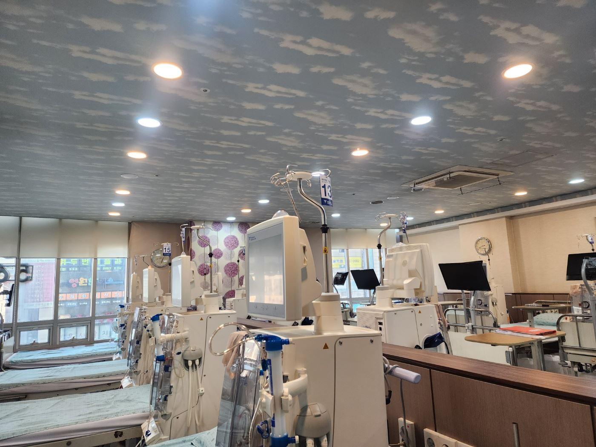

- 홈
- 지역별 안내
- 남양주 · 다산
남양주 · 다산 인공신장실 · 야간투석
— 경춘로로 바로 닿는 구리 조형도내과의원
다산신도시·도농·별내·진접·퇴계원에서 인공신장실을 찾으신다면, 경춘로를 따라 구리역 앞까지 바로 이어지는 조형도내과의원을 확인해 보세요.
독일 FMC 5008S 투석기 전 병상, HDF 추가 비용 없음, 야간투석, 연중무휴가 기준입니다.
핵심 요약
- 조형도내과의원은 남양주시 경계에 붙은 구리시 교문동(경춘로 163, 구리역 인근)에 있어 다산·도농에서 승용차 10분 안팎, 별내·퇴계원·진접에서 15~25분 거리입니다.
- 남양주 인공신장실을 비교하실 때 기준이 되는 투석기(FMC 5008S 전 병상), HDF(추가 비용 없음), 투석용수 열탕 소독, UPS, 신장내과 전문의 상주, 야간투석·연중무휴를 모두 갖추고 있습니다.
- 남양주 야간투석 — 서울·구리로 출퇴근하는 다산·별내 직장인 환자를 위한 저녁 시간대 투석을 운영합니다. 일정 문의 031-565-9051~2.
남양주에서 구리 인공신장실을 선택하는 이유
남양주시는 면적이 넓어 다산·도농권과 별내·진접·화도권의 생활권이 다르고, 특히 다산신도시·도농·지금동은 구리시와 도로가 바로 이어져 실제 생활권이 구리와 겹칩니다. 다산에서 경춘로를 타면 신호 몇 개 만에 구리역 앞 교문사거리에 닿기 때문에, 주 3회 4시간씩 다녀야 하는 투석 병원으로 구리 조형도내과의원을 선택하시는 분이 많습니다.
- 다산신도시(다산동·진건읍) — 다산중앙로→경춘로, 승용차 10~15분. 시내버스 경춘로 노선 이용 가능.
- 도농동 · 지금동 — 경춘로 직결, 승용차 5~10분. 경의중앙선 도농역→구리역 1정거장.
- 별내동 · 별내면 — 북부간선/경춘북로→경춘로, 승용차 15~20분.
- 퇴계원 · 진접 · 오남 — 경춘북로 또는 47번 국도→경춘로, 승용차 20~30분. 경춘선 퇴계원역·별내역→구리역 환승.
- 평내·호평 · 금곡 — 경춘로 서진, 승용차 20~30분. 경춘선/경의중앙선 이용 시 구리역 하차.
- 와부(덕소) · 양정 — 경의중앙선 덕소역·양정역→구리역, 또는 강변북로/경춘로.
남양주 · 다산 인공신장실을 고를 때 확인할 것
| 확인 항목 | 조형도내과의원 |
|---|---|
| 투석기 | 독일 Fresenius FMC 5008S — 전 병상 동일 (2023년 최신형 전면 교체) |
| 혈액투석여과(HDF) | 전 환자 시행, 추가 비용 없음 |
| 투석용수 | 매주 열탕 소독 정수 시스템 |
| 정전 대비 | 1시간 이상 무정전 전원장치(UPS) |
| 의료진 | 신장내과 전문의 상주 · 고혈압·당뇨 등 동반 질환 진료 |
| 규모 | 41병상 — 전 병상 동일 장비·개인 모니터 |
| 운영 | 연중무휴 · 야간투석 월·수·금 23:00까지 |
| 접근성 | 경춘로 대로변, 구리역 인근, 건물 주차장 |
남양주 · 다산 야간투석
다산·별내에서 서울로 출퇴근하시는 분은 퇴근길에 구리를 지나게 됩니다. 조형도내과의원의 야간투석은 월·수·금 밤 23:00까지 낮과 같은 장비·의료진으로 진행되어, 근무를 유지하면서 주 3회 투석을 이어갈 수 있습니다. 시작 시각과 병상은 상황에 따라 배정되므로 미리 전화로 확인해 주세요. 야간투석 안내 →
다산 · 남양주 신장내과 · 고혈압 · 당뇨
투석 전 단계인 만성콩팥병 관리, 혈뇨·단백뇨 검사, 당뇨·고혈압·고지혈증 진료도 함께 합니다. 다산에서 건강검진 후 콩팥 수치(eGFR·크레아티닌·단백뇨)를 지적받으셨다면 신장내과 전문의 진료를 받아 보시길 권합니다. 신장내과 안내 → · 내과진료 안내 →
※ 이동 시간은 교통 상황에 따라 다릅니다. 병원 이전 시 현재 병원의 투석 기록·검사 결과를 지참해 주세요.